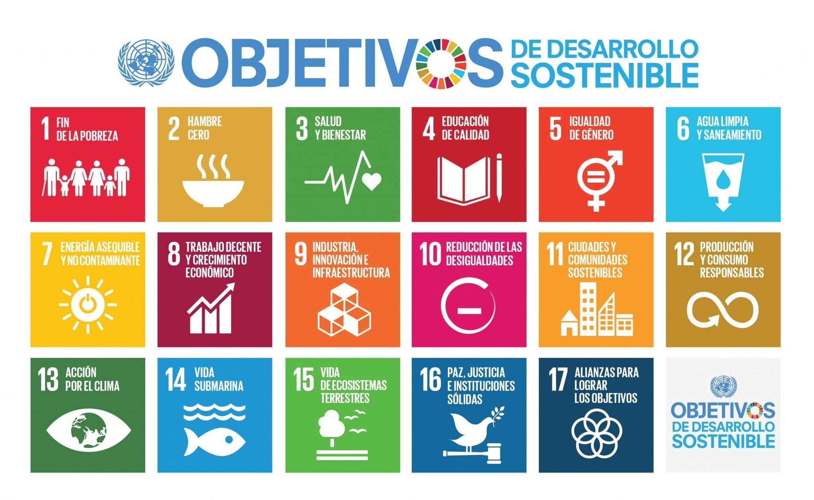

Justificación de su desarrollo y el impacto esperado.
La temática principal es la desaparición de las truchas en el río. Este hecho ha causado un gran interés al alumnado por querer saber cómo podemos evitarlo y si hay algo en nuestras manos para solucionarlo. Con esta situación de aprendizaje puedo trabajar de forma indirecta el cuidado del medio ambiente, la importancia de conocer el impacto que pueden tener nuestras actuaciones en la sociedad y valores como el respeto hacia otras formas de vida. El contexto de donde partimos para crear esta situación de aprendizaje es a raíz de una salida que hacemos a una piscifactoría de una localidad cercana al centro escolar. La guía nos comenta que casi no hay truchas y que si nos hemos dado cuenta de que es muy difícil verlas en el río. Este dato causa mucho interés al alumnado y en conversaciones en clase comentan que quieren saber más al respecto.
El reto que se plantea es qué podemos hacer para que haya más truchas en el río. Surge a raíz de una conversación en asamblea y del asombro de los alumnos al percatarse de que casi no hay peces en el río. El producto final será la suelta de alevines en el río para conseguir su repoblación.
Relación de la SdA con los ODS y Retos del siglo XXI
Justificaciones por las que elijo la unidad
-
Los ODS Agenda 2030
Por la relación con los Objetivos de Desarrollo Sostenible (ODS) marcados en la agenda 2030: tiene un papel destacado en contribuir al logro de varios ODS y esta unidad especialmente ya que se trabajarán algunos de ellos:
Destacar que esta situación de aprendizaje tiene relación con los siguientes ODS:
- ODS nº 4 “Educación de calidad”: Garantizando una educación inclusiva, equitativa y de calidad, promoviendo oportunidades de aprendizaje para todos.
- ODS nº 5 “Igualdad de género”: Destacando el relevante papel de la mujer en la ciencia, y fomentando la vocación de las jóvenes en el ámbito científico.
- ODS nº 6 “Agua limpia y saneamiento”: Entendiendo la importancia de preservar y no contaminar este recurso vital.
- ODS nº 15 "Vida de ecosistemas terrestres": Gestión sostenible de los bosques, lucha contra la desertificación, detener e invertir la degradación de las tierras, detener la pérdida de biodiversidad.
Los Retos del s. XXI
Porque esta unidad también impulsa al alumnado en el desarrollo de los desafíos educativos o retos del siglo XXI, que vinculados a las competencias clave, dan sentido a los aprendizajes. A continuación, algunos de estos retos a los que se contribuye especialmente:
Desarrollar una actitud responsable a partir de la toma de conciencia de la degradación del medio ambiente.
